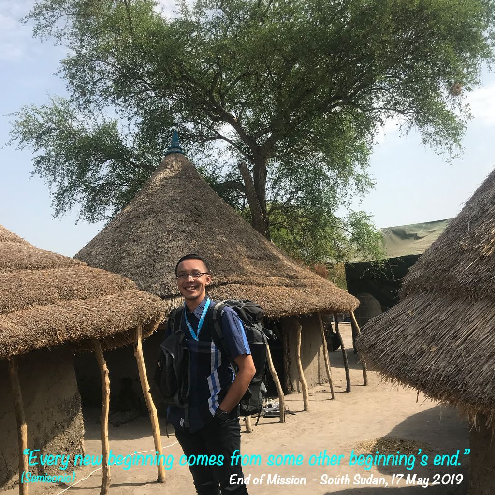

Wakaf Produktif Kebun Kopi

Lembaga Nazir
Waqf Institution
Rumah Wakaf Indonesia
Jauh sebelum dunia mengenalnya, kebun kopi di Ngantang ini sudah lebih dulu mendidik seorang anak manusia — tanpa papan tulis, tanpa ruang kelas, hanya akar, tanah, pohon-pohon kopi yang baru tumbuh, dan doa tulus seorang kakek yang tahu caranya mendidiknya tanpa banyak kata-kata. Anak itu tumbuh, pergi jauh, dan kelak menyusuri zona-zona konflik di bawah bendera PBB: merawat jiwa-jiwa yang luka di Sudan Selatan, di tenda-tenda pengungsian Afghanistan, di negeri-negeri yang jarang terdengar namanya. Kebun kopi inilah yang dulu menemani setiap langkah perjalanannya. Kini ia pulang — dan kebun ini diwakafkan: dikembalikan kepada semua, dengan harapan bahwa dari tanah yang sama, siapa pun bisa mulai perjalanannya sendiri.
4,918 m² of land in Ngantang was once the first teacher of a child — no blackboard, no classroom. That child grew up, went far, and would one day traverse conflict zones under the UN flag: tending to wounded souls in South Sudan, in refugee camps across Afghanistan, in lands rarely spoken of. This coffee garden was the one that accompanied every step of that journey. Now he has returned — and this garden is endowed as waqf: given back to all, with the hope that from the same earth, anyone may begin their own journey.
Wakaf Produktif Kebun Kopi Ngantang adalah program pengelolaan lahan wakaf berbasis ilmu — menggabungkan agronomi, kewirausahaan sosial, dan dokumentasi terbuka dalam satu ekosistem yang berkelanjutan.
Wakaf Produktif Kebun Kopi Ngantang is a knowledge-based waqf land management program — combining agronomy, social entrepreneurship, and open documentation in one sustainable ecosystem.
Bukan sekadar perkebunan kopi. Ini adalah living lab — tempat belajar, bereksperimen, dan berbagi pengetahuan secara terbuka. Siapa pun bisa ikut.
Not just a coffee farm. This is a living lab — a place to learn, experiment, and share knowledge openly. Anyone can join.
Lima pintu masuk — pilih yang paling relevan untukmu.
Five entry points — choose what's most relevant to you.

"Kutinggalkan kebun kopi ini bertahun-tahun lamanya — pergi ke tenda-tenda pengungsian, ke kota-kota yang luka oleh perang, ke lorong-lorong dunia yang jarang terdengar namanya. Selalu ada momen di mana kebun ini menemukanku kembali. Keputusan untuk mewakafkannya tidak lahir dari satu momen saja. Ada cerita yang lebih panjang di baliknya — tentang kakek, tentang kehilangan, tentang apa artinya mengembalikan — dengan sepenuh hati — semua yang pernah dengan diam-diam diberikan sebuah kebun tua."
"I left this garden for years — to refugee camps, to cities wounded by war, to corridors of the world rarely spoken of. There were always moments when this land found me again. The decision to dedicate it as waqf wasn't born in one instant. There's a longer story behind it — about a grandfather, about loss, about what it truly means to return — wholeheartedly — all that an old garden once quietly gave."
Program ini membuka jalan bagi petani Ngantang untuk tidak hanya menjual hasil panen, tapi juga berbagi pengetahuan dan menjadi bagian dari ekosistem yang lebih besar.
This program opened a path for Ngantang farmers to not only sell their harvest, but also share knowledge and become part of a larger ecosystem.
Kolaborasi yang tulus — antara ilmu akademik, pengalaman lapangan bertahun-tahun, dan nilai-nilai keislaman yang kuat. Jarang ada program seperti ini.
A genuine collaboration — between academic knowledge, years of field experience, and strong Islamic values. Programs like this are rare.
Yang membuat saya terkesan adalah transparansinya — mereka mendokumentasikan prosesnya secara terbuka, termasuk tantangan dan kegagalan. Itu yang membuat ini kredibel.
What impressed me is the transparency — they document the process openly, including challenges and failures. That's what makes it credible.
Kami terbuka untuk riset kolaboratif, kemitraan strategis, relawan, pelatihan, dan berbagai bentuk dukungan lainnya. Mari tumbuh bersama.
We welcome collaborative research, strategic partnerships, volunteers, training, and various forms of support. Let's grow together.